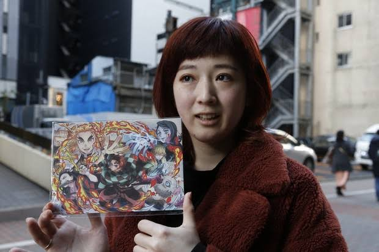

Demon Slayer: Kimetsu no Yaiba
A supernatural action adventure following Tanjiro Kamado as he seeks a way to restore his sister Nezuko and confront the demons responsible for his family's tragedy.

MANGA ARTIST • WRITER
Koyoharu Gotouge is a Japanese manga artist best known for creating Demon Slayer: Kimetsu no Yaiba, one of the most successful manga franchises of its generation.
← Back to CreatorsKoyoharu Gotouge is a Japanese manga artist who created Demon Slayer: Kimetsu no Yaiba. The series combines historical-inspired settings, supernatural elements, sword fighting, family bonds, and dramatic character journeys.
Demon Slayer became a major global franchise through its manga, anime adaptation, films, merchandise, and other media.
A supernatural action adventure following Tanjiro Kamado as he seeks a way to restore his sister Nezuko and confront the demons responsible for his family's tragedy.
An early work that helped establish ideas that would later contribute to the development of Demon Slayer.